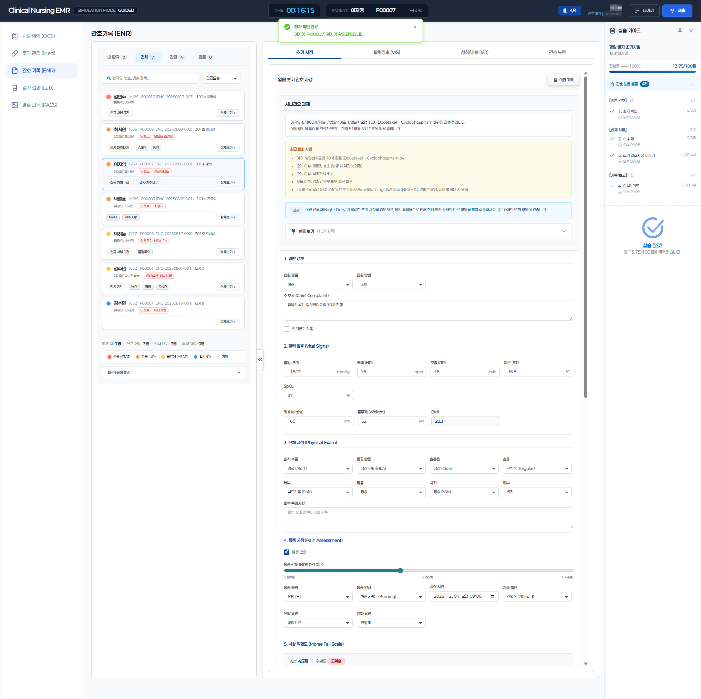
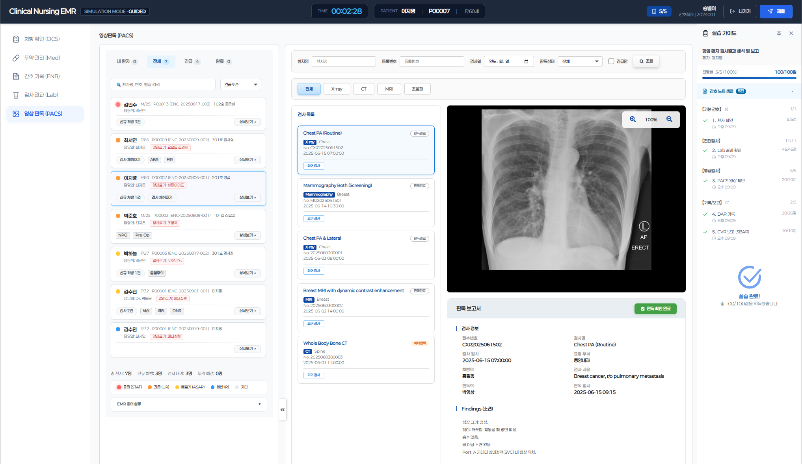
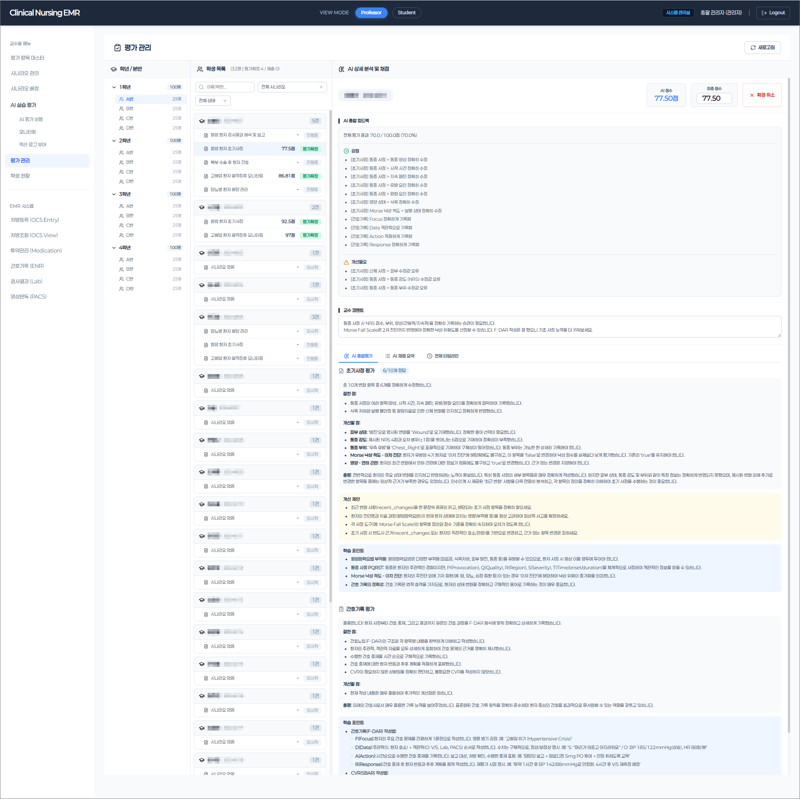
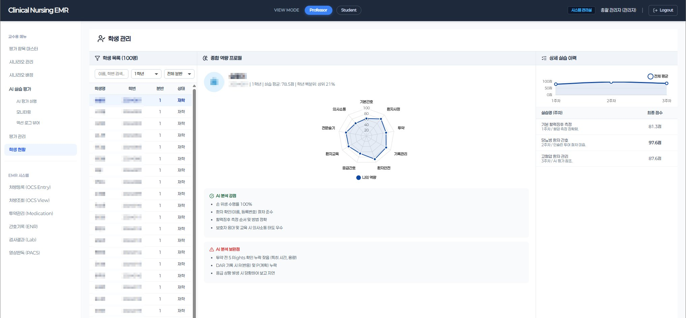
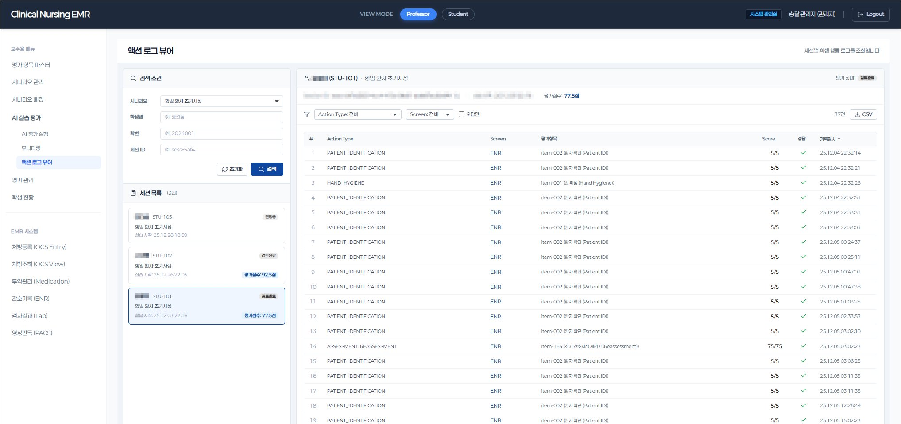
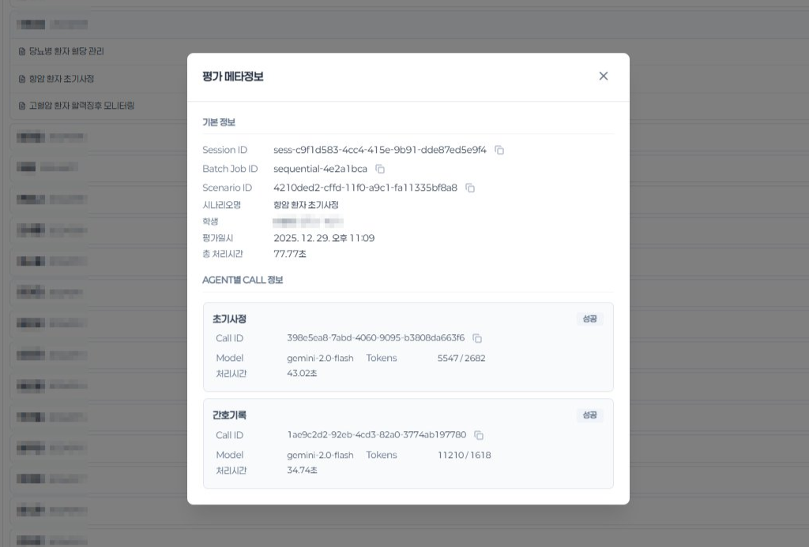

Features
Key Screens

Students practice in a real hospital EMR environment. Records Initial Assessment, Vital Signs, I/O, and Nursing Notes in real time with step-by-step progress tracking.

CBC, biochemistry results with trend charts. Critical values highlighted, nursing action reports auto-generated.

X-Ray, CT, MRI images with diagnostic reports. Findings + Impression sections simulate real clinical reading.

Full AI prompt, patient context, and JSON response are logged transparently. Each agent's score and detailed feedback visible in real time.

Professors review AI scores with category-level feedback (correct / caution / needs improvement). Final scores approved or adjusted with one click.

Each student's clinical competency visualized as a 9-dimension radar profile — from patient safety to documentation accuracy. AI-generated analysis identifies strengths and specific areas for improvement, with score trends tracked across sessions.

Every student action — navigation, data entry, clinical decision — recorded with action type, screen context, evaluation score, and timestamp. Enables granular analysis of clinical reasoning patterns and serves as the evidence base for AI evaluation.

Full LLMOps visibility — every Agent call surfaces its Call ID, token consumption, and processing latency. Reviewers can inspect any call's complete trace or trigger selective re-execution of individual Agents without affecting the rest of the pipeline.